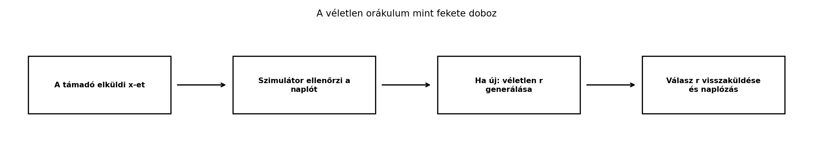

Miért van szükség egyáltalán a véletlen orákulumra? A modern kriptográfia egyik legfontosabb elve, hogy a biztonságot pontos definíciókhoz és bizonyításokhoz kössük. A gyakorlatban azonban sok séma úgy használ hash-függvényeket, mintha azok tökéletesen véletlen függvények lennének: például egy RSA-aláírásnál az üzenet lenyomatát kitevőre emeljük, vagy egy interaktív azonosító protokoll kihívását a hash értékéből számítjuk. A valódi hash-függvények azonban determinisztikus algoritmusok, és a kódjuk nyilvános; nem is lehetnek „véletlenek” abban az értelemben, ahogy egy idealizált fekete doboz. A standard modellben (ahol a hash egy konkrét, rögzített függvény) sok ilyen séma biztonsági bizonyítása ismeretlen vagy rendkívül nehéz. A véletlen orákulum modell (random oracle model, ROM) ezt a szakadékot hidalja át: feltesszük, hogy a hash-függvény ideális, véletlen függvényként viselkedik, és ebben az idealizált világban bizonyítunk. A bizonyítás heurisztikus erejű, de a gyakorlatban rendkívül hasznos, mert megragadja, miért gondoljuk biztonságosnak a használt sémát.
Képzeljünk el egy dobozt, amelybe bárki bedobhat egy tetszőleges bitsorozatot, és a doboz minden bemenetre egy független, egyenletesen véletlenül választott, rögzített hosszúságú bitsorozattal válaszol. A doboz konzisztens: ha ugyanazt a bemenetet kétszer dobjuk be, ugyanazt a választ kapjuk. A doboz belsejét senki sem látja, de mindenki – a támadó is – korlátlanul kérdezhet.

A fenti folyamat a bizonyításban játszott szerepet is szemlélteti: a redukció (szimulátor) figyeli a támadó minden lekérdezését, és szükség esetén előre beállíthatja a választ, ha a támadó még nem kérdezte le az adott bemenetet. Ez a naplózás és programozás a ROM-bizonyítások két alapvető technikája.
Definíció. Legyen kimeneti hossz. A véletlen orákulum egy függvény, amelyet egyenletesen véletlenül választunk az összes ilyen függvény halmazából. A modellben minden résztvevő – beleértve a támadót is – orákulum-hozzáféréssel rendelkezik -hoz: tetszőleges bemenetet küldhet, és megkapja -et, anélkül hogy a függvény belső leképezését látná.
A definíció lényege, hogy a értéke egy adott pontban teljesen véletlen és független minden más pont értékétől, amíg a lekérdezés meg nem történik. Ez formálisan azt jelenti, hogy ha páronként különböző bemenetek, akkor a értékek függetlenek és egyenletes eloszlásúak a halmazon.
A bizonyításokban a redukció gyakran maga szimulálja a véletlen orákulumot a támadó számára. Ekkor a szimulátor két fontos képességgel bír:
Definíció. (Programozható véletlen orákulum) A programozható véletlen orákulum modellben a bizonyítást végző redukció egy naplót vezet a függvény értékeiről. Új lekérdezés esetén az értéket kétféleképpen választhatja: (a) teljesen véletlenül, vagy (b) egy előre megadott értékkel, ha a redukció ezt előzőleg elhatározta. A feltétel az, hogy minden bemenethez pontosan egy érték tartozzon, és a támadó számára a válaszok eloszlása megegyezzen a valódi véletlen orákuluméval.
A programozhatóság a bizonyításokban azt a célt szolgálja, hogy a redukció a támadó sikerét saját nehéz feladatának megoldására tudja fordítani. Például RSA-aláírásnál a redukció egy adott értékhez szeretné megtudni -t, ezért a támadó által lekérdezett üzenetre a értéket éppen -ra állítja.
Tegyük fel, hogy az RSA nyilvános kulcs
,
a titkos kulcs
,
ahol
.
Az aláírás egyszerűen a hash értékének „visszafejtése”:
az ellenőrzés pedig azt vizsgálja, hogy
teljesül-e.
A ROM-ban a véletlen függvény, ezért a támadó nem számíthatja ki előre, mi lesz egy újonnan választott -re. Ez megakadályozza a triviális hamisítást: ha a támadó szeretne egy aláírást valamely -re, akkor előbb meg kell kérdeznie -et, vagy ki kell találnia az értéket.
Szemléltessük a programozhatóságot egy kis számpéldával. Legyen , , (ellenőrzés: , ). A redukció azt szeretné megtudni, mennyi , azaz az RSA-inverzét. Ezért amikor a támadó lekérdezi -et valamilyen -re, a redukció a értékét -re programozza. A támadó megkapja a értéket, és ha képes hamisítani, akkor előállít egy aláírást, amelyre .
Számítsuk ki a helyes aláírást a mi modellünkben:
,
(mert
,
),
majd
,
.
Tehát
.
Ellenőrzés:
.
,
.
Így
,
az aláírás helyes.
A redukció tehát a támadó hamisításából kinyeri -at, ami a titkos kitevővel való hatványozás. Ez a képesség az RSA-probléma megoldása (adott -hoz a ismerete nélkül); ha a támadó hatékonyan hamisít, a redukció megsérti az RSA-feltevést. (Hogy az RSA-probléma ekvivalens-e a faktorizációval, nem ismert.) Ez a ROM-bizonyítás váza.
Tekintsünk egy egyszerű interaktív azonosító protokollt, például a Schnorr-protokollt egy rendű, generátorral rendelkező csoportban. A bizonyító rendelkezik titokkal, nyilvános kulcsa . A protokoll:
Ez a protokoll interaktív, mert a kihívásnak a verifikálótól kell érkeznie. A Fiat–Shamir-transzformáció ezt nem interaktívvá teszi: a kihívást a hash-függvényből számítjuk: , ahol az aláírandó üzenet. A ROM-ban a véletlen, ezért a bizonyító nem tudja előre megválasztani -et úgy, hogy a kihívás kedvező legyen; a kihívás „véletlennek tűnik”. Ez a tulajdonság teszi lehetővé a biztonsági bizonyítást: ha a támadó hamisít, a redukció újraindíthatja a támadót ugyanazzal a értékkel, de más választ adva, és ebből kinyeri a titkos értéket (az ún. forking lemma). Ezt a technikát részletesen a A Fiat–Shamir-transzformáció alfejezetben vizsgáljuk.
A ROM leggyakoribb alkalmazásai:
Továbbvitt eredmény. A véletlen orákulum modellt és annak programozható változatát használjuk a következő alfejezetekben: Az OAEP és a Bleichenbacher-támadás, RSA-aláírás, hash-and-sign és a PSS, Schnorr-aláírás és DSA, ML-KEM (Kyber) és A Fiat–Shamir-transzformáció. Mindegyik esetben a bizonyítás a hash-függvényt idealizált véletlen orákulumként kezeli, és a támadó sikerét egy feltételezett nehéz problémára (faktorizáció, diszkrét logaritmus, LWE) redukálja.
A bizonyítások általános szerkezete a következő. A redukció célja, hogy egy nehéz problémát oldjon meg (például adott értékhez megtalálja -t). Ehhez futtatja a támadót, és közben szimulálja a véletlen orákulumot. A támadó minden -lekérdezését naplózza, és a kritikus bemenetre a értéket az értékre állítja. Ha a támadó sikeresen hamisít egy aláírást, akkor a redukció kinyeri a keresett értéket. Az előnyveszteség abból adódik, hogy a támadó esetleg nem kérdezi le az adott -et, vagy a szimulált eloszlása kissé eltér a valóditól. A részletek a fent hivatkozott alfejezetekben.
A ROM heurisztika, és ezt egy híres eredmény is alátámasztja. Canetti, Goldreich és Halevi konstruáltak egy mesterséges sémát, amely a véletlen orákulum modellben bizonyíthatóan biztonságos, de ha a véletlen orákulumot bármilyen konkrét hash-függvénnyel helyettesítjük, a séma teljesen feltörhető. A konstrukció lényege a következő.
A séma úgy működik, hogy a hash-függvény kimenetét megvizsgálja egy speciális, rendkívül ritka „varázs” érték jelenlétére. A véletlen orákulum gyakorlatilag soha nem adja vissza ezt az értéket, ezért a ROM-ban a séma biztonságos marad. Egy valódi hash-függvény azonban egy determinisztikus program, amelynek a forráskódja nyilvános. Az ellenség megkeresheti a programban azt a bemenetet, amelyre a hash ezt a varázs értéket adja, és ezzel a sémát azonnal feltöri. Mivel minden valós hash-függvény leírható ilyen programként, a ROM-bizonyítás nem vihető át automatikusan a valós világra.
A példa szemléletesen mutatja, hogy a ROM-bizonyítás nem abszolút garancia. Fontos azonban hangsúlyozni, hogy a CGH-konstrukció szándékosan mesterséges, és nem érinti a gyakorlatban használt, „természetes” sémákat (OAEP, PSS, Fiat–Shamir, KEM-ek). A gyakorlati sémáknál a ROM-bizonyítás erős heurisztikus érvet ad, és nincs ismert támadás, amely a ROM-bizonyítás hibáját kihasználná.
A standard modell az a világ, ahol a hash-függvény egy konkrét, nyilvános algoritmus, és a bizonyítás nem használ semmilyen idealizációt. Itt a bizonyítás a hash-függvény specifikus tulajdonságaira (például ütközésellenállás, egyirányúság) támaszkodik. Sok fontos konstrukció (például a Cramer–Shoup titkosítás, vagy a Boneh–Boyen aláírás) standard modellben is bizonyítható, de gyakran bonyolultabb vagy kevésbé hatékony.
Az ideális rejtjel modell (ideal cipher model) a blokkrejtjelet idealizálja: feltesszük, hogy minden kulcsra a blokkrejtjel egy független, egyenletesen véletlen permutáció. Ezt a modellt használják például a Davies–Meyer-féle tömörítőfüggvény bizonyításában.
A generikus csoport modell a csoportműveletet fekete dobozként kezeli. A támadó csak csoportműveleteket végezhet (például összeadás, skalárszorzás), de nem fér hozzá az elemek konkrét bináris reprezentációjához. Ez a modell hasznos elliptikus görbék és diszkrét logaritmus alapú sémák alsó korlátjainak igazolására, de szintén heurisztikus, mert a valóságban a reprezentáció információt szivárogtathat.
Mindezek a modellek közös vonása, hogy a bizonyítás egy idealizált világban történik, majd a gyakorlatban az idealizált komponenst egy konkrét primitívre cseréljük. A bizonyítás így nem formális garancia, de rendkívül hasznos eszköz a tervezési hibák felfedésére.
A véletlen orákulum modellt naponta használjuk, amikor:
A gyakorlatban tehát a ROM-bizonyításokat bátran használjuk, mert: (1) nincs ismert támadás, amely a ROM-bizonyítás és a valós hash közötti különbséget kihasználná; (2) a sémák „természetesek”, nem mesterséges CGH-típusú konstrukciók; (3) a hash-függvényeket úgy tervezik, hogy véletlenszerűen viselkedjenek, és a kriptoanalízis folyamatosan teszteli őket. A ROM-bizonyítás tehát erős heurisztikus garanciát ad, és a szabványosítási folyamatok elfogadják.
1. feladat (A)
Tegyük fel, hogy a ROM-ban egy
függvény kimeneti hossza
bit. Hány lehetséges függvény van a
halmazban egy rögzített,
hosszúságú bemeneti halmazra (azaz csak
darab, páronként különböző bemenetet tekintünk)? Válaszd ki:
,
,
,
.
2. feladat (A)
Egy hash-and-sign RSA aláírásnál a nyilvános kulcs
,
a titkos
.
A redukció a
értéket
-re
programozza. Számítsd ki a helyes
aláírást, és ellenőrizd, hogy
.
3. feladat (B)
Magyarázd el, hogyan használja a Fiat–Shamir-transzformáció a véletlen
orákulumot egy interaktív azonosító protokollban! Miért fontos, hogy a
hash bemenete tartalmazza az elkötelezést
()
és az üzenetet
()?
Mi történne, ha a hash csak az
-től
függene?
4. feladat (B)
Adott a következő séma:
:
;
friss véletlen
-rel,
ahol
véletlen orákulum. Igazold, hogy ez a séma a ROM-ban IND-CPA
biztonságos! Mi a helyzet, ha a kulcs nélküli
változatot használjuk, és mi, ha
helyett konkrét nyilvános hash-t? (Útmutatás: a támadó is kérdezhet
-t.)
5. feladat (C)
Bizonyítsd be, hogy a hash-and-sign RSA aláírás
(,
ahol
értéke
-ba
képez) a ROM-ban EUF-CMA biztonságos, ha az RSA-feltevés teljesül (az
RSA-probléma nehéz). Írd le a redukció algoritmusát lépésenként, és
számold ki az előnyveszteséget! (Feltéve, hogy a támadó
hash-lekérdezést és
aláírás-lekérdezést végez, és
valószínűséggel hamisít.)
6. feladat (D)
Tervezz egy játék-implementációt Pythonban, amely a hash-and-sign RSA
aláírást szimulálja a ROM-ban! A hash-függvényt egy naplózott véletlen
orákulummal helyettesítsd (minden új bemenetre véletlen érték), és
mutasd meg, hogyan lehet a programozhatóságot egy adott
értékhez kihasználni. Írd meg a kódot röviden, és magyarázd el, miért
NEM éles használatra való!
1. feladat (A)
A válasz
.
Ugyanis egy függvény minden bemenethez egy 3 bites értéket rendel, ami
lehetőség.
darab független bemenethez a lehetőségek száma
.
2. feladat (A)
,
,
,
.
Számítás:
.
Lépésenként:
,
.
.
:
,
marad
.
:
,
marad
.
Most
.
.
.
.
Tehát
.
Ellenőrzés:
.
.
.
Tehát
,
helyes.
3. feladat (B)
A Fiat–Shamir-transzformáció a kihívást
értékkel helyettesíti, ahol
a bizonyító által küldött elkötelezés,
az üzenet. A hash bemenetének tartalmaznia kell mind az elkötelezést,
mind az üzenetet, hogy a bizonyító ne tudja előre megválasztani
-et
egy kedvező
kihíváshoz, és ne tudja a kihívást más üzenetre újrahasznosítani. Ha a
hash csak
-től
függne, a támadó egy rögzített
-hez
tartozó érvényes választ kiszámíthatna, és különböző üzenetekre is
felhasználhatná, ami hamisítási támadást tenne lehetővé.
4. feladat (B)
A támadó
-t
csak akkor ismerheti, ha lekérdezi
-t
a
pontban, amihez ki kellene találnia
-t:
lekérdezésből ennek esélye legfeljebb
.
Az
-ek
ütközésének esélye (a kihívás
-je
egyezik egy korábbival) legfeljebb
.
Ezen események nélkül a kihívás maszkja friss, egyenletes és független
-től,
így
,
ami elhanyagolható.
A kulcs nélküli változat a ROM-ban is triviálisan törhető: nyilvános, a támadó maga is lekérdezheti -et, és . Konkrét nyilvános hash-sel a bizonyítás nem vihető át automatikusan (a ROM heurisztika), de a kulcsos változat gyakorlati hash-sel (például HMAC-jellegű felhasználásban) a szokásos módon használható.
5. feladat (C)
Redukció. Tegyük fel, hogy
összesen legfeljebb
különböző hash-lekérdezést (az aláírás-kérésekhez tartozókat is
beleszámítva) és
aláírás-lekérdezést tesz, és
valószínűséggel hamisít. Az RSA-probléma: adott
(
egyenletes), számítsuk ki
-t.
A redukció
:
Feltehető, hogy a hamisított -ra lekérdezte -ot (különben ezt a lekérdezést maga is elvégezheti). Mivel és relatív prím, az egyenletes -on, ugyanúgy, mint , ezért a szimulált eloszlása megegyezik a valódi véletlen orákuluméval. A választása független nézetétől, így . A hamisított üzenetre nem kérhetett aláírást, ezért sikeres hamisításnál a 3. lépésben nem szakít meg. Az előnyveszteség tehát egy szorzó: . Ha előnye nem elhanyagolható, akkor nem elhanyagolható valószínűséggel oldja meg az RSA-problémát, ami ellentmond az RSA-feltevésnek; a séma tehát EUF-CMA biztonságos a ROM-ban.
6. feladat (D)
Az alábbi Python-kód játék-implementáció, amely a hash-and-sign RSA
aláírást szimulálja egy naplózott véletlen orákulummal. A
programozhatóságot úgy mutatjuk meg, hogy egy adott
értékhez beállítjuk a hash-t, és a támadó ezt kapja meg.
# OKTATÁSI CÉLRA – NEM ÉLES HASZNÁLATRA
import random
class RandomOracle:
def __init__(self):
self.log = {}
def query(self, x):
if x not in self.log:
# Programozható: a hívó előre beállíthatja
self.log[x] = random.randrange(2**8) # 8 bites kimenet
return self.log[x]
def program(self, x, y):
# Csak akkor működik, ha x még nem kérdezett
if x not in self.log:
self.log[x] = y
else:
raise ValueError("Már lekérdezett érték nem programozható")
# Kis RSA paraméterek: N=55, e=3, d=27
N, e, d = 55, 3, 27
H = RandomOracle()
# A redukció programozza a H(42) értéket y=4-re
y = 4
H.program(42, y)
# A támadó "lekérdezi" a hash-t, és megkapja y-t
h = H.query(42)
print(f"H(42) = {h}") # Várt kimenet: H(42) = 4
# A redukció kiszámolja a "helyes" aláírást (ez a titkos d ismeretében)
# Itt mi ismerjük d-t, de a valódi redukció nem; ez szemléltetés
sigma = pow(y, d, N)
print(f"sigma = {sigma}") # Várt kimenet: sigma = 49
# Ellenőrzés
print(pow(sigma, e, N) == h) # Várt kimenet: TrueA kód nem éles használatra való, mert: (1) kis paramétereket használ,
(2) a random modul nem kriptográfiai véletlen, (3) a hash
nem valódi, csak egy naplózott szimuláció. Éles célra a
cryptography csomag magas szintű API-ját kell
használni.
A véletlen orákulum modell (ROM) a hash-függvényt idealizált, egyenletesen véletlen függvényként kezeli, amelyhez minden fél, a támadó is hozzáférhet. A bizonyításokban a redukció szimulálja -t, naplózza a lekérdezéseket (megfigyelhetőség), és előre beállíthatja egy adott bemenetre a választ (programozhatóság), feltéve, hogy az még nem lekérdezett. A ROM-ban bizonyíthatóan biztonságos sémák közé tartozik az RSA-OAEP, a hash-and-sign RSA, a Fiat–Shamir aláírások és számos KEM. A Canetti–Goldreich–Halevi-ellenpélda azonban megmutatja, hogy a ROM-bizonyítás heurisztika: létezik mesterséges séma, amely a ROM-ban biztonságos, de bármely konkrét hash-függvénnyel feltörhető. A gyakorlatban a ROM-bizonyításokat mégis elfogadják, mert a természetes sémákra nincs ismert támadás. A standard modell, az ideális rejtjel modell és a generikus csoport modell hasonló idealizációk.
Továbbvitt eredmények. A véletlen orákulum modellt és programozhatóságát használjuk az Az OAEP és a Bleichenbacher-támadás, az RSA-aláírás, hash-and-sign és a PSS, a Schnorr-aláírás és DSA, az ML-KEM (Kyber) és a A Fiat–Shamir-transzformáció alfejezetekben. A hash-and-sign RSA aláírás ROM-beli EUF-CMA biztonsága az RSA-feltevésre redukálódik.
A fejezethez a könyvterv az alábbi forráskiindulópontokat adta meg: Boneh–Shoup: A Graduate Course in Applied Cryptography (online), Katz–Lindell: Introduction to Modern Cryptography, Rogaway: Introduction to Modern Cryptography jegyzet. E források oldal- és tételszámait a könyv nem ellenőrizte. A leírt eredmények (véletlen orákulum definíció, programozhatóság, CGH-ellenpélda, a felsorolt alkalmazások) a kriptográfia klasszikus, stabil tudásanyagához tartoznak; a szabványos alkalmazások (OAEP, PSS, EdDSA, ML-KEM) megfelelőségét a hivatkozott későbbi alfejezetekben részletesen tárgyaljuk. A paraméterajánlások időben változhatnak, ezért az éles rendszerekben mindig a legfrissebb szabványokat és ajánlásokat kell követni.